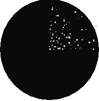
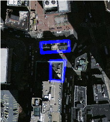

Name
ST_MapAlgebraExpr — 2バンド版: 二つの入力バンドに対する妥当なPostgreSQL代数演算で形成された、指定したピクセルタイプとなる1バンドラスタを生成します。バンドを指定しない場合には、どちらも1番と仮定します。結果ラスタは、一つ目のラスタのアラインメント (スケール、スキュー、ピクセル角位置)にあわされます。範囲は"extenttype"引数で定義されます。取りうる"extenttype"の値はINTERSECTION, UNION, FIRST, SECONDです。
Synopsis
raster ST_MapAlgebraExpr(raster rast1, raster rast2, text expression, text pixeltype=same_as_rast1_band, text extenttype=INTERSECTION, text nodata1expr=NULL, text nodata2expr=NULL, double precision nodatanodataval=NULL);
raster ST_MapAlgebraExpr(raster rast1, integer band1, raster rast2, integer band2, text expression, text pixeltype=same_as_rast1_band, text extenttype=INTERSECTION, text nodata1expr=NULL, text nodata2expr=NULL, double precision nodatanodataval=NULL);
説明
![[Warning]](images/warning.png) | |
ST_MapAlgebraExpr は2.1.0で非推奨になりました。代わりにST_MapAlgebra (数式版) を使います。 |
expressionで定義された妥当な二つのバンドへのPostgreSQL代数演算を入力ラスタ (rast1, rast2)に適用して、一つのバンドを持つラスタを生成します。nband1, nband2が指定されない場合には、1番バンドと仮定します。新しいラスタは、一つ目のラスタと同じアラインメント (スケール、スキュー、ピクセル隅)を持ちます。新しいラスタは、extenttype引数で定義される範囲になります。
- expression
二つのラスタとPostgreSQL定義済み関数/演算子を含むPostgreSQL代数式です。関数と演算子は、二つのピクセルがインタセクトするピクセルの値を定めます。たとえば(([rast1] + [rast2])/2.0)::integerといったふうになります。
- pixeltype
出力ラスタのピクセルタイプです。必ずST_BandPixelTypeに挙げられたものの一つになるか、省略されるか、NULLに設定されます。引数として渡されないかNULLが渡された場合には、一つ目のラスタのピクセルタイプになります。
- extenttype
新しいラスタの範囲を制御します。
INTERSECTION- 新しいラスタの範囲は二つのラスタのインタセクトした領域です。これがデフォルトです。UNION- 新しいラスタの範囲は二つのラスタの結合です。FIRST- 新しいラスタの範囲は一つ目のラスタと同じです。SECOND- 新しいラスタの範囲は二つ目のラスタと同じです。
- nodata1expr
rast1がNODATA値で、特にrast2ピクセルに値がある時に、rast2だけを返すか返すべき値を定義する定数を含む代数式です。- nodata2expr
rast2がNODATA値で、特にrast2ピクセルに値がある時に、rast1だけを返すか返すべき値を定義する定数を含む代数式です。- nodatanodataval
rast1とrast2のピクセルの両方がNOADTA値になる場合に返すべき定数です。
pixeltypeが渡された場合には、新しいラスタは、指定されたピクセルタイプのバンドを持ちます。pixeltypeとしてNULLが渡されたりピクセルタイプを指定しない場合には、新しいラスタはrast1と同じピクセルタイプになります。
数式の中で使える語は、元バンドのピクセル値を参照する [rast1.val], [rast2.val]、1始まりの列/行インデクスを参照する[rast1.x], [rast1.y]などです。
Availability: 2.0.0
例: 2バンドの共有と結合
元のラスタから1バンドラスタを生成します。元のラスタバンドの値について2で割った余りが入ります。
-- ラスタの集合の生成 --
DROP TABLE IF EXISTS fun_shapes;
CREATE TABLE fun_shapes(rid serial PRIMARY KEY, fun_name text, rast raster);
-- 空間参照系をメートル単位のマサチューセッツ平面として、ボストンのまわりの形状を挿入 --\
INSERT INTO fun_shapes(fun_name, rast)
VALUES ('ref', ST_AsRaster(ST_MakeEnvelope(235229, 899970, 237229, 901930,26986),200,200,'8BUI',0,0));
INSERT INTO fun_shapes(fun_name,rast)
WITH ref(rast) AS (SELECT rast FROM fun_shapes WHERE fun_name = 'ref' )
SELECT 'area' AS fun_name, ST_AsRaster(ST_Buffer(ST_SetSRID(ST_Point(236229, 900930),26986), 1000),
ref.rast,'8BUI', 10, 0) As rast
FROM ref
UNION ALL
SELECT 'rand bubbles',
ST_AsRaster(
(SELECT ST_Collect(geom)
FROM (SELECT ST_Buffer(ST_SetSRID(ST_Point(236229 + i*random()*100, 900930 + j*random()*100),26986), random()*20) As geom
FROM generate_series(1,10) As i, generate_series(1,10) As j
) As foo ), ref.rast,'8BUI', 200, 0)
FROM ref;
-- 共有と結合の生成 --
SELECT ST_MapAlgebraExpr(
area.rast, bub.rast, '[rast2.val]', '8BUI', 'INTERSECTION', '[rast2.val]', '[rast1.val]') As interrast,
ST_MapAlgebraExpr(
area.rast, bub.rast, '[rast2.val]', '8BUI', 'UNION', '[rast2.val]', '[rast1.val]') As unionrast
FROM
(SELECT rast FROM fun_shapes WHERE
fun_name = 'area') As area
CROSS JOIN (SELECT rast
FROM fun_shapes WHERE
fun_name = 'rand bubbles') As bub
|
 インタセクションの場合
|
 結合の場合
|
例: 別個のバンドとしてキャンバス上にラスタをオーバレイする
-- ST_AsPNGを使って1バンドで灰色に見える画像を作成します --
WITH mygeoms
AS ( SELECT 2 As bnum, ST_Buffer(ST_Point(1,5),10) As geom
UNION ALL
SELECT 3 AS bnum,
ST_Buffer(ST_GeomFromText('LINESTRING(50 50,150 150,150 50)'), 10,'join=bevel') As geom
UNION ALL
SELECT 1 As bnum,
ST_Buffer(ST_GeomFromText('LINESTRING(60 50,150 150,150 50)'), 5,'join=bevel') As geom
),
-- ジオメトリと1対1に対応するキャンバスを定義
canvas
AS (SELECT ST_AddBand(ST_MakeEmptyRaster(200,
200,
ST_XMin(e)::integer, ST_YMax(e)::integer, 1, -1, 0, 0) , '8BUI'::text,0) As rast
FROM (SELECT ST_Extent(geom) As e,
Max(ST_SRID(geom)) As srid
from mygeoms
) As foo
),
rbands AS (SELECT ARRAY(SELECT ST_MapAlgebraExpr(canvas.rast, ST_AsRaster(m.geom, canvas.rast, '8BUI', 100),
'[rast2.val]', '8BUI', 'FIRST', '[rast2.val]', '[rast1.val]') As rast
FROM mygeoms AS m CROSS JOIN canvas
ORDER BY m.bnum) As rasts
)
SELECT rasts[1] As rast1 , rasts[2] As rast2, rasts[3] As rast3, ST_AddBand(
ST_AddBand(rasts[1],rasts[2]), rasts[3]) As final_rast
FROM rbands;
|
 rast1
|
 rast2
|
|
 rast3
|
 final_rast
|
例: 選択した区画の2メートル幅境界線を空中写真にオーバレイする
-- 前二つの切り取ったバンドと
-- 3番バンドにジオメトリをオーバレイしたバンドからなる
-- 3バンドのラスタを生成します
-- このクエリはWindows 64ビット版のPostGISで3.6秒かかりました
WITH pr AS
-- 演算の順序の注意: 全てのラスタを必要なピクセル範囲に切り抜いています
(SELECT ST_Clip(rast,ST_Expand(geom,50) ) As rast, g.geom
FROM aerials.o_2_boston AS r INNER JOIN
-- 対象の区画を結合して、後でインタセクトできる単一ジオメトリを形成します。
(SELECT ST_Union(ST_Transform(geom,26986)) AS geom
FROM landparcels WHERE pid IN('0303890000', '0303900000')) As g
ON ST_Intersects(rast::geometry, ST_Expand(g.geom,50))
),
-- ラスタの破片を結合します
-- ラスタのST_Unionは非常に遅いですがラスタを小さくすれば速度が上がります
-- 先に切り出しておいてから結合しているのはこのためです
prunion AS
(SELECT ST_AddBand(NULL, ARRAY[ST_Union(rast,1),ST_Union(rast,2),ST_Union(rast,3)] ) As clipped,geom
FROM pr
GROUP BY geom)
-- ラスタの破片を結合し、区画境界線のオーバレイも持った
-- 最終のラスタを返します
-- 最初の二つのバンドと3番バンド+ジオメトリの地図代数関数とを追加します
SELECT ST_AddBand(ST_Band(clipped,ARRAY[1,2])
, ST_MapAlgebraExpr(ST_Band(clipped,3), ST_AsRaster(ST_Buffer(ST_Boundary(geom),2),clipped, '8BUI',250),
'[rast2.val]', '8BUI', 'FIRST', '[rast2.val]', '[rast1.val]') ) As rast
FROM prunion;
|
 青線が対象区画の境界です
|